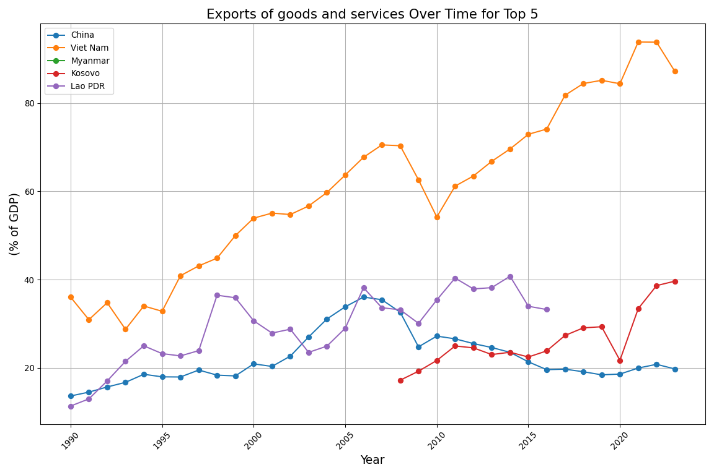
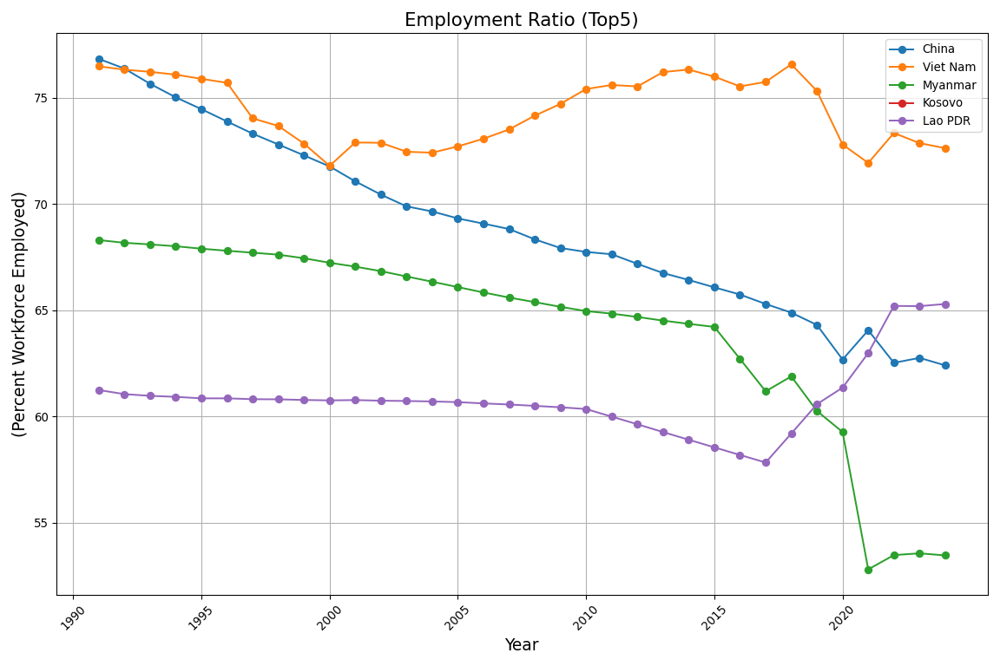

/home/ejinrig/anaconda3/lib/python3.11/site-packages/seaborn/_oldcore.py:1119: FutureWarning:
use_inf_as_na option is deprecated and will be removed in a future version. Convert inf values to NaN before operating instead.
/home/ejinrig/anaconda3/lib/python3.11/site-packages/seaborn/_oldcore.py:1119: FutureWarning:
use_inf_as_na option is deprecated and will be removed in a future version. Convert inf values to NaN before operating instead.
Results and Discussion
GDP per Capita
The time series analysis shows distinct growth patterns across the United States, China, and India. The United States exhibited steady GDP per capita growth, reflecting a mature, innovation-driven economy with resilience to economic shocks. China’s GDP per capita remained low until the 1990s, after which it surged rapidly, illustrating the impact of industrialization and economic reforms. India’s growth, though positive, has been more gradual, suggesting ongoing development alongside persistent structural challenges.
PCA and KMeans clustering from 2013–2023 revealed clear groupings of countries by income levels, with the U.S. among the high-income cluster, China moving upward toward middle-to-high income status, and India situated within a growing but still lower-income group. These patterns highlight both persistent global inequality and emerging convergence trends among developing economies.
The GDP per capita forecast for the U.S. projects continued growth, although uncertainties remain. Together, the results demonstrate the varying trajectories of national economic development and underscore the importance of sustained policy efforts to support inclusive growth.
Employment to Population Ratio
GDP Growth
Here are the results from the GDP Growth analysis.
The table below summarizes GDP growth statistics across decades.
| decade | count_growth | min_growth | avg_growth_decade | max_growth | |
|---|---|---|---|---|---|
| 0 | 1960s | 1026 | -27.270000 | 5.461588 | 81.887797 |
| 1 | 1970s | 1423 | -46.433035 | 4.997033 | 76.620155 |
| 2 | 1980s | 1663 | -42.451118 | 2.991529 | 34.600001 |
| 3 | 1990s | 1942 | -64.047107 | 2.897831 | 149.972963 |
| 4 | 2000s | 2033 | -36.656780 | 4.039469 | 63.379875 |
| 5 | 2010s | 2093 | -50.338515 | 3.183693 | 86.826748 |
| 6 | 2020s | 819 | -54.336155 | 2.009832 | 75.061377 |
The 1960s exhibited the highest average GDP growth (~5.46%), while 2020 to present had the lowest average (~2.00%) across the world. The 1990s showed notable volatility with the widest range in growth rates (-64% to +150%). This pattern highlights a long-term slowdown of global economic expansion over the past six decades.
The table below summarizes GDP growth by world region.
| region | n_countries | n_obs | avg_growth | min_growth | max_growth | |
|---|---|---|---|---|---|---|
| 0 | East Asia & Pacific | 36 | 1828 | 3.788046 | -54.336155 | 75.061377 |
| 1 | Europe & Central Asia | 57 | 2558 | 2.876755 | -44.899775 | 54.199300 |
| 2 | Latin America & Caribbean | 41 | 2157 | 3.219749 | -26.782933 | 63.334587 |
| 3 | Middle East & North Africa | 21 | 1098 | 4.927993 | -64.047107 | 86.826748 |
| 4 | North America | 3 | 189 | 2.818637 | -6.842870 | 14.363636 |
| 5 | South Asia | 8 | 442 | 5.054728 | -32.908829 | 37.507870 |
| 6 | Sub-Saharan Africa | 48 | 2727 | 3.825631 | -51.030865 | 149.972963 |
| 7 | World | 1 | 63 | 3.783984 | -5.108132 | 6.392297 |
When broken down by region, the Middle East and North Africa had the highest average GDP growth (~4.93%) compared to other world regions from 1960 to 2023. This is likely due to oil wealth and energy exports in this region. North America had the slowest average growth (~2.82%) during this time period. This is consistent with trends observed in developed economies with mature markets and slower population growth. The variabiltiy seen across regions suggest that resource wealth, political stability, and demographic factors strongly influence long-term GDP trajectories.
The table below summarizes GDP growth by income group.
| income_group | n_countries | n_obs | min_growth | avg_growth | max_growth | |
|---|---|---|---|---|---|---|
| 0 | Upper middle income | 54 | 2813 | -64.047107 | 4.040969 | 149.972963 |
| 1 | Lower middle income | 51 | 2731 | -46.433035 | 3.876785 | 58.078096 |
| 2 | World | 1 | 63 | -5.108132 | 3.783984 | 6.392297 |
| 3 | Low income | 25 | 1333 | -51.030865 | 3.368783 | 106.279814 |
| 4 | High income | 83 | 4068 | -54.336155 | 3.255113 | 82.809329 |
Among income groups, Upper Middle Income countries experienced the highest average growth (~4.04%) from 1960 to 2023, while High Income countries had lower average growth (~3.26%) during this time period. The Upper Middle Income country growth reflects the rapid industrialization and modernization of economies such as China, Malaysia, and Turkey from 1960 to 2023. The more stable, lower growth experienced by High Income countries reinforces the idea that as economies mature, growth rates naturally slow. This comparison shows the importance of the development stage in driving economic performance across countries.
This first figure displays average GDP growth over time by region.

While short-term fluctuations are common across the globe, a general decline in growth rates is observed post-1970s across most regions. It is clear on the figure that all world regions experienced high short-term volatility, especially Sub-Saharan Africa and South Asia, with many regions experiencing sharp dips around known global recessions (i.e. the early 1980s and late 2000s). The world average (thicker black line) remains relatively stable compared to the volatility shown in other regions, with spikes and dips corresponding to major global events. The world average also demonstrates how the global economy exhibits greater resilience and inertia compared to individual regions.
The second figure presents a smoothed trend line of GDP growth over time by world region.
This reveals a clearer long-term downward trend of GDP growth across all regions in the world. Notably, Sub-Saharan Africa, the Middle East and North Africa, and South Asia initially experienced relatively high growth, but later their growth rates converged downward with other regions. North America and Europe and Central Asia have shown the lowest growth decline trajectory so far. This is likely explained by structural factors, such as aging populations, slower technological diffusion, and diminishing returns to capital.
The below figure displays the average GDP growth over time by country income level.
This income group graphs show that GDP growth trends differ substantially across income levels. High-income countries experienced relatively stable and moderate growth throughout the observed period, with smaller fluctuations even during major global events such as the 2008 financial crisis and the 2020 pandemic. In contrast, lower-middle-income and low-income countries exhibited much greater volatility, with sharp downturns during periods of global recession. Upper-middle-income countries generally achieved higher average growth rates, particularly during the 1990s and early 2000s, but their growth also became less consistent after 2008. These patterns suggest that lower-income countries are more vulnerable to external shocks, while high-income countries are more insulated due to stronger economic institutions and diversification.
This last figure presents a smoothed trend line of GDP growth over time by country income level.

The smoothed income group trends highlight longer-term structural shifts in global GDP growth patterns. Across all income groups, there is a visible gradual decline in average growth rates from the 1960s to the 2020s. Although upper-middle-income countries reached a peak of growth around the early 2000s, this momentum slowed considerably in the following decades. Low-income countries experienced the steepest long-term decline, pointing to persistent challenges such as political instability, lack of infrastructure, and dependency on a narrow range of industries. High-income countries maintained steadier growth but at increasingly lower rates over time, suggesting that mature economies are facing limits to expansion. Together, these smoothed trends imply that broader global factors, such as technological stagnation, demographic shifts, and environmental pressures, are influencing growth trajectories across all income levels, albeit unevenly.
Identifying Drivers of Sustained Economic Growth: An Analysis of High-Performing Economies
In addition to looking at global GDP growth, we aim to identify factors that contribute to the highest sustained economic growth. We will measure economic growth by examining the percentage increase in GDP over time and focus our analysis on the top five countries with the highest growth rates.
Country Name Average_Rank
40 China 16.029412
257 Viet Nam 42.470588
160 Myanmar 44.588235
261 Kosovo 51.562500
129 Lao PDR 57.911765These 5 highest countries are China, Viet Nam, Myanmar, Kosovo and Lao PDR. Let us put htem up on a graph to show their relationship over time
Economists state that a health gdp growth rate is 2% we see that on average, our top 5 countries are always above the average, excluding the huge drop during COVID.
Let us see if we can find any meaningful connections between these coutnries when looking at percent of Export and Imports as a portion of GDP

When looking at the percentage of GDP made up by exports and imports, we see a clear difference between China, Vietnam, Myanmar, Kosovo, and Lao PDR. This variation highlights how trade can be a powerful tool for economic growth. By expanding exports, countries can generate more income, create jobs, and bring in foreign currency, which can be reinvested into infrastructure, education, and technology. Similarly, imports allow countries to access goods, services, and technology that they do not produce themselves, helping to improve productivity and competitiveness. For example, Vietnam has aggressively expanded its export sector over the past three decades by integrating into global supply chains, especially in electronics, textiles, and manufacturing. This strategy has helped Vietnam achieve rapid economic growth, reduce poverty, and transition from a primarily agricultural economy to one focused on industry and services. In contrast, China used trade as a major driver of its economic rise by becoming the “world’s factory,” exporting a vast range of manufactured goods while simultaneously importing raw materials and high-tech equipment to fuel its industrial expansion. Even smaller economies like Kosovo have used trade to stimulate growth. By opening its markets and increasing exports, especially in sectors like metals, textiles, and services, Kosovo has worked to create more job opportunities and strengthen its economy, even though challenges remain. In short, we see that our countries have successfully used exports and imports to connect with the global economy which contributed to faster GDP growth.
Speaking on GDP growth, let us look at and compare the nominal GDP growth for each of the countries, and see if there are any meaningful relationships there.
The graph presented examines nominal GDP per capita over time to assess the economic growth trajectories of our top five countries. By focusing on nominal GDP per capita, the graph aims to provide a clearer understanding of each country’s initial economic position and how it evolves over time. Upon review, we observe that there is little correlation between the starting GDP per capita of the countries, as they begin at different levels yet still experience significant economic growth. While the goal was to explore the influence of initial economic conditions on long-term growth patterns, the results do not strongly support this hypothesis. Instead, it becomes apparent that the varying starting points in capital across the countries did not seem to hinder their ability to achieve high rates of growth.
Let us now go onto to look at the relationship between employment percentages

Across China, Vietnam, Myanmar, Kosovo, and Lao PDR, employment ratios show some common patterns alongside important differences. In general, countries that have embraced export-led growth strategies, industrialization, and international trade tend to have higher employment ratios and have created more formal job opportunities. Meanwhile, countries that remain heavily dependent on agriculture or have less diversified economies often experience lower employment ratios, with a larger share of workers engaged in informal or subsistence activities. Focusing specifically on Vietnam and Lao PDR highlights these trends clearly. Vietnam has maintained a high employment ratio, thanks to its rapid industrialization and integration into global markets. Since the 1990s, Vietnam’s shift from a primarily agricultural economy to a manufacturing and services-driven one has created millions of jobs in factories, technology firms, and export-oriented industries. Trade agreements with major partners like the United States, the European Union, and neighboring Asian countries have further boosted employment by attracting foreign investment and expanding Vietnam’s access to global markets. In contrast, Lao PDR has a much lower employment ratio. Although Laos has also experienced economic growth, much of its labor force remains tied to agriculture, often in informal or subsistence roles. Industrial and manufacturing sectors are smaller, and trade is less diversified, limiting the number of formal job opportunities available. While sectors like hydropower and mining have driven some growth, they tend to be capital-intensive rather than labor-intensive, meaning they generate fewer jobs relative to their economic output. Despite these differences, all five countries have maintained relatively high GDP growth rates in recent years. Strong employment growth, especially in Vietnam, has played a key role by boosting domestic demand, increasing household incomes, and enabling broader participation in the economy — all of which help sustain and accelerate economic expansion.